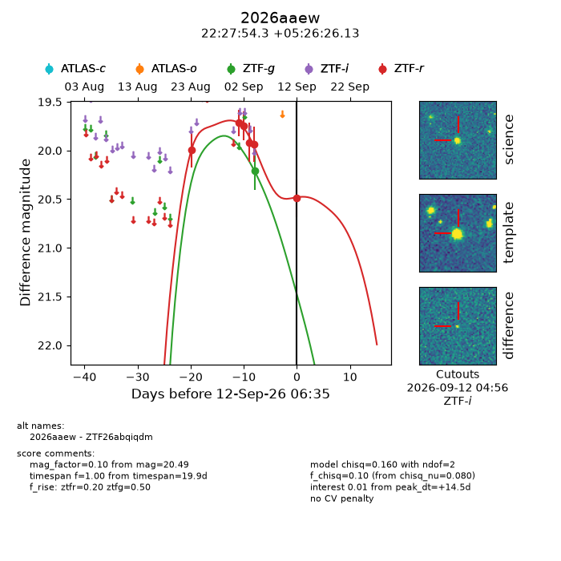
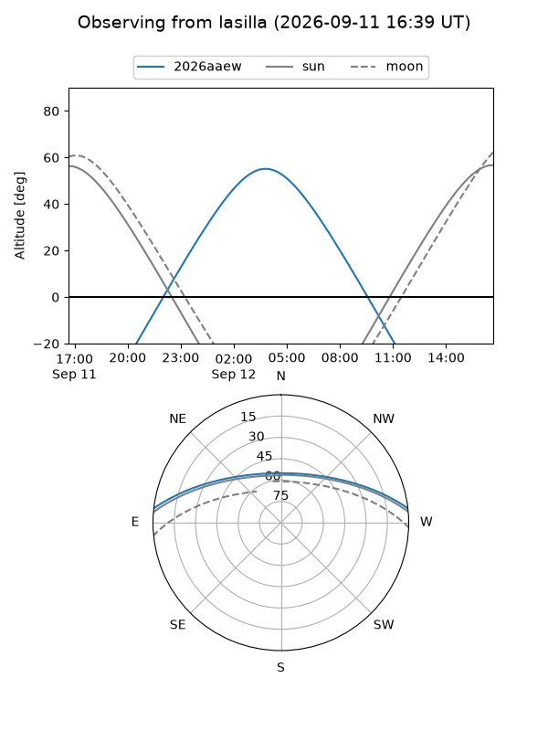
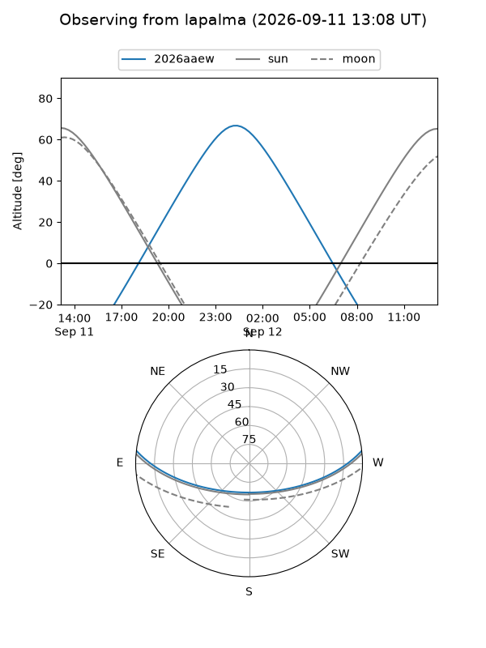
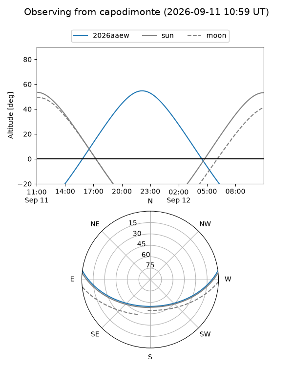
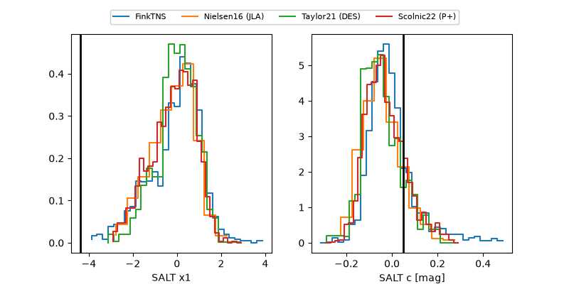

2026aaew
Target 2026aaew at 2026-09-12 06:37
Aliases and brokers:
FINK-ZTF: ztf.fink-portal.org/ZTF26abqiqdm
Lasair-ZTF: lasair-ztf.lsst.ac.uk/objects/ZTF26abqiqdm
ALeRCE-ZTF: alerce.online/object/ZTF26abqiqdm
YSE-PZ: ziggy.ucolick.org/yse/transient_detail/2026aaew
TNS name: wis-tns.org/object/2026aaew
Direct TNS query: direct search
alt names
ZTF26abqiqdm (ztf,fink_ztf)
2026aaew (tns,yse)
Coordinates:
equatorial (ra, dec) = 336.9762,+5.44059
equatorial (HMS+DMS) = 22:27:54.29,+05:26:26.13
galactic (l, b) = (70.7048,-42.42292)
Flags:
TNS type: nan
peak dt: +14.5
Photometry:
last ztfg=20.21, ztfr=20.49
1 ztfg, 6 ztfr detections
Lightcurve

Visibility



Additional plots
